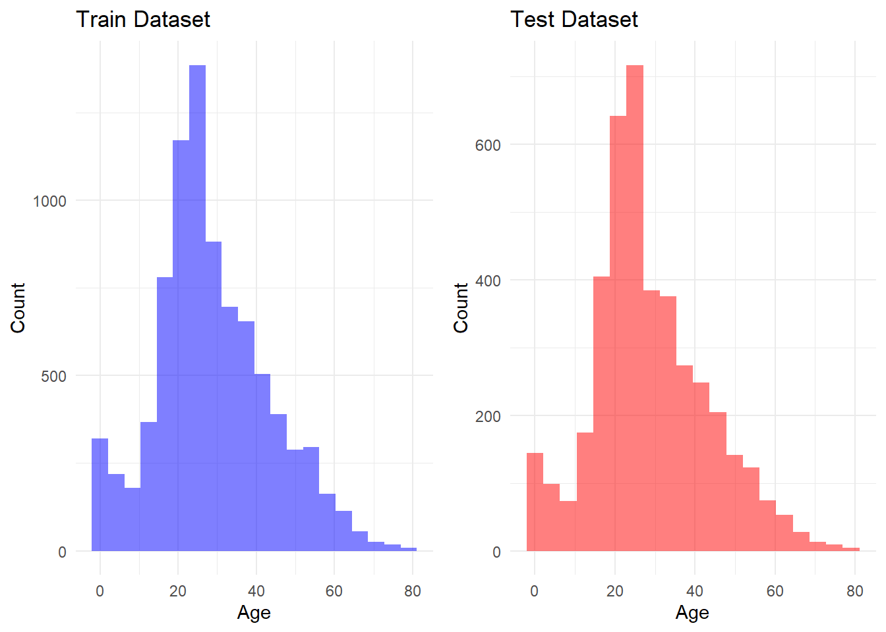
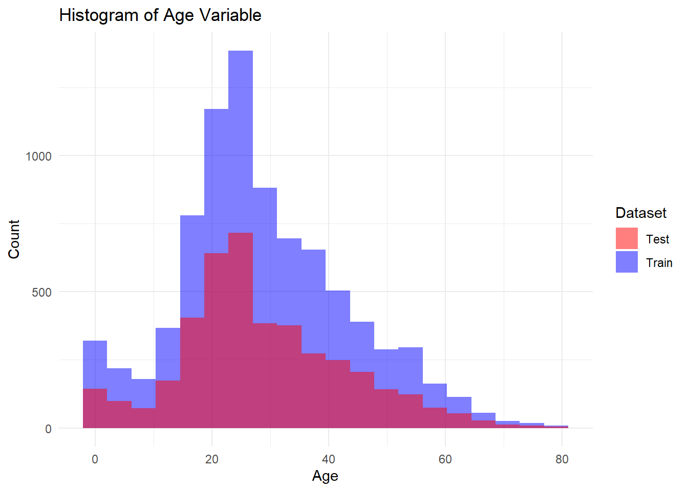
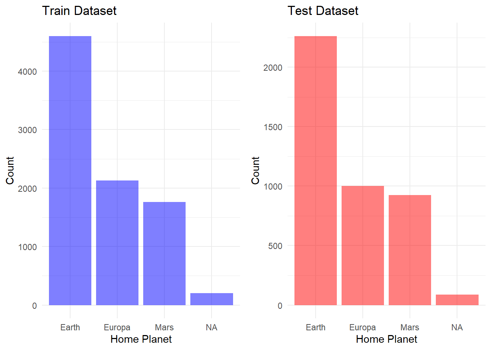
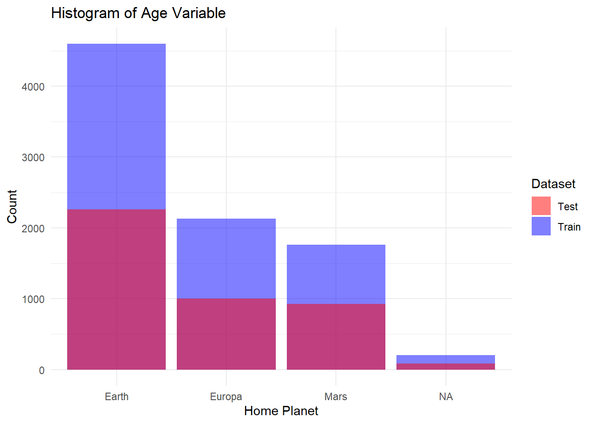

Veri bilimini korumanın kozmik bir gizemi çözmek için gerekli olduğu 2912 yılında hoş geldiniz. Dört ışık yılı öteden bir iletilen ve işler iyi görünmüyor.
Uzay Gemisi Titanic, bir ay önce fırlatılan bir yıldızlararası yolcu yolculuğuydu. Gemide yaklaşık 13.000 yolcuyla, geminin ilk yolculuğuna çıktı ve göçmenleri güneş sistemimizden yakın yıldızların dönüşünde dönen üç yeni yaşanabilir dış gezegene taşındı.
İlk varış noktası olan yakıcı 55 Cancri E’ye doğru yolda Alpha Centauri’yi dönerken, dikkatsiz Uzay Gemisi Titanik, bir toz bulutunun içinde saklı bir uzay-zaman anomalisiyle çarpıştı. Ne yazık ki, 1000 yıl önceki ismin babasıyla aynı kaderi paylaştı. Gemi sağlam kalsa da, yolcuların neredeyse ortasında alternatif bir boyuta taşındı.
train.csv Eğitim verisi olarak kullanılacak yolcuların yaklaşık üç ikisine (~8700) ait kişisel kayıtlar. PassengerId Her yolcu için benzersiz bir kimlik. Kimliği, yolcunun seyahat ettiği ve gruptaki numarasını gggg_pp gösteren bir form grubu alır. Bir gruptaki kişiler genellikle aile üyeleridir, ancak her zaman değil. HomePlanet Yolcunun ekonomik gezegeni, genellikle daimi ikamet ettiği gezegen. CryoSleep Yolcunun duraklama süresinin sona erme hareketini almayı seçmeyi seçmediğini belirtir. Kriyo uykudaki yolcu kabinlerine kapatılır. Kabin yolcusunun kabin numarası. Şeklindedirdeck/num/side, Liman veya Sancak için sideolabilir.PS Destinasyon-Yolcunun ineceği gezegen. Yaş Yolcunun yaşı. VIP Yolcunun seyahati sırasında özel VIP hizmeti için ödemelerin yapılmadığı. RoomService , FoodCourt , Alışveriş Merkezi , Spa , VRDeck Uzay Gemisi Titanic’in birçok lüks konaklama için yolcunun ödediği tutar. İsim Yolcunun adı ve soyadı. Taşınan yolcunun başka bir boyuta taşınıp taşınmadığı. Bu hedefi tahmin etmeye çalışmak sütununda yer alır.
library(readr)train <-read_csv("data/train.csv")
Rows: 8693 Columns: 14
── Column specification ────────────────────────────────────────────────────────
Delimiter: ","
chr (5): PassengerId, HomePlanet, Cabin, Destination, Name
dbl (6): Age, RoomService, FoodCourt, ShoppingMall, Spa, VRDeck
lgl (3): CryoSleep, VIP, Transported
ℹ Use `spec()` to retrieve the full column specification for this data.
ℹ Specify the column types or set `show_col_types = FALSE` to quiet this message.
test <-read_csv("data/test.csv")
Rows: 4277 Columns: 13
── Column specification ────────────────────────────────────────────────────────
Delimiter: ","
chr (5): PassengerId, HomePlanet, Cabin, Destination, Name
dbl (6): Age, RoomService, FoodCourt, ShoppingMall, Spa, VRDeck
lgl (2): CryoSleep, VIP
ℹ Use `spec()` to retrieve the full column specification for this data.
ℹ Specify the column types or set `show_col_types = FALSE` to quiet this message.
library(explore)
library(psych)
Attaching package: 'psych'
The following object is masked from 'package:explore':
describe
psych::describe(train)
Warning in FUN(newX[, i], ...): min için eksik olmayan argüman yok; Inf
döndürülüyor
Warning in FUN(newX[, i], ...): min için eksik olmayan argüman yok; Inf
döndürülüyor
Warning in FUN(newX[, i], ...): min için eksik olmayan argüman yok; Inf
döndürülüyor
Warning in FUN(newX[, i], ...): max için eksik olmayan argüman yok; -Inf
döndürülüyor
Warning in FUN(newX[, i], ...): max için eksik olmayan argüman yok; -Inf
döndürülüyor
Warning in FUN(newX[, i], ...): max için eksik olmayan argüman yok; -Inf
döndürülüyor
vars n mean sd median trimmed mad min max range
PassengerId* 1 8693 4347.00 2509.60 4347.0 4347.00 3221.69 1 8693 8692
HomePlanet* 2 8492 1.67 0.80 1.0 1.58 0.00 1 3 2
CryoSleep 3 8476 NaN NA NA NaN NA Inf -Inf -Inf
Cabin* 4 8494 3150.79 1975.53 3133.5 3128.98 2670.90 1 6560 6559
Destination* 5 8511 2.48 0.82 3.0 2.60 0.00 1 3 2
Age 6 8514 28.83 14.49 27.0 28.28 13.34 0 79 79
VIP 7 8490 NaN NA NA NaN NA Inf -Inf -Inf
RoomService 8 8512 224.69 666.72 0.0 64.97 0.00 0 14327 14327
FoodCourt 9 8510 458.08 1611.49 0.0 88.31 0.00 0 29813 29813
ShoppingMall 10 8485 173.73 604.70 0.0 44.60 0.00 0 23492 23492
Spa 11 8510 311.14 1136.71 0.0 64.59 0.00 0 22408 22408
VRDeck 12 8505 304.85 1145.72 0.0 60.20 0.00 0 24133 24133
Name* 13 8493 4234.72 2446.08 4233.0 4234.28 3140.15 1 8473 8472
Transported 14 8693 NaN NA NA NaN NA Inf -Inf -Inf
skew kurtosis se
PassengerId* 0.00 -1.20 26.92
HomePlanet* 0.67 -1.11 0.01
CryoSleep NA NA NA
Cabin* 0.05 -1.29 21.44
Destination* -1.10 -0.62 0.01
Age 0.42 0.10 0.16
VIP NA NA NA
RoomService 6.33 65.22 7.23
FoodCourt 7.10 73.25 17.47
ShoppingMall 12.62 328.60 6.56
Spa 7.63 81.13 12.32
VRDeck 7.82 85.94 12.42
Name* 0.00 -1.20 26.54
Transported NA NA NA
describe_all(test)
# A tibble: 13 × 8
variable type na na_pct unique min mean max
<chr> <chr> <int> <dbl> <int> <dbl> <dbl> <dbl>
1 PassengerId chr 0 0 4277 NA NA NA
2 HomePlanet chr 87 2 4 NA NA NA
3 CryoSleep lgl 93 2.2 3 0 0.37 1
4 Cabin chr 100 2.3 3266 NA NA NA
5 Destination chr 92 2.2 4 NA NA NA
6 Age dbl 91 2.1 80 0 28.7 79
7 VIP lgl 93 2.2 3 0 0.02 1
8 RoomService dbl 82 1.9 843 0 219. 11567
9 FoodCourt dbl 106 2.5 903 0 439. 25273
10 ShoppingMall dbl 98 2.3 716 0 177. 8292
11 Spa dbl 101 2.4 834 0 303. 19844
12 VRDeck dbl 80 1.9 797 0 311. 22272
13 Name chr 94 2.2 4177 NA NA NA
Veri Önizleme
PESSENGER ID Her yolcu için benzersiz bir kimlik. Her kimlik, gggg_pp biçimini alır; burada gggg, yolcunun seyahat ettiği grubu belirtir ve pp, gruptaki numaradır. Bir gruptaki kişiler genellikle aile üyeleridir, ancak her zaman değil.
Onun yolcusu için benzersiz bir kimlik. Onun kimlik gggg_pp’sini alır; burada gggg, yolcunun birlikte seyahat ettiği grubu belirtir ve pp, grubun içindeki numaradır. Bir gruptaki insanların çoğu aile üyeleridir, ancak her zaman değil.
A B C D E F G Other
256 779 747 478 876 2794 2559 204
describe_all(train)
# A tibble: 17 × 8
variable type na na_pct unique min mean max
<chr> <chr> <int> <dbl> <int> <dbl> <dbl> <dbl>
1 PassengerId chr 0 0 8693 NA NA NA
2 HomePlanet chr 201 2.3 4 NA NA NA
3 CryoSleep lgl 217 2.5 3 0 0.36 1
4 Destination chr 182 2.1 4 NA NA NA
5 Age dbl 179 2.1 81 0 28.8 79
6 VIP lgl 203 2.3 3 0 0.02 1
7 RoomService dbl 181 2.1 1274 0 225. 14327
8 FoodCourt dbl 183 2.1 1508 0 458. 29813
9 ShoppingMall dbl 208 2.4 1116 0 174. 23492
10 Spa dbl 183 2.1 1328 0 311. 22408
11 VRDeck dbl 188 2.2 1307 0 305. 24133
12 Name chr 200 2.3 8474 NA NA NA
13 Transported lgl 0 0 2 0 0.5 1
14 tek_basina fct 0 0 2 NA NA NA
15 deck chr 0 0 8 NA NA NA
16 num chr 199 2.3 1818 NA NA NA
17 side chr 199 2.3 3 NA NA NA
train <- train %>%select(-Name, -num)test <- test %>%select(-Name, -num)
train <- train %>%mutate_if(is.logical, as.factor) %>%# Convert logical columns to factorsmutate(across(where(is.character) &!all_of("PassengerId"), as.factor)) # Convert character columns to factorstest <- test %>%mutate_if(is.logical, as.factor) %>%# Convert logical columns to factorsmutate(across(where(is.character) &!all_of("PassengerId"), as.factor)) # Convert character columns to factors
summary(train)
PassengerId HomePlanet CryoSleep Destination
Length:8693 Earth :4602 FALSE:5439 55 Cancri e :1800
Class :character Europa:2131 TRUE :3037 PSO J318.5-22: 796
Mode :character Mars :1759 NA's : 217 TRAPPIST-1e :5915
NA's : 201 NA's : 182
Age VIP RoomService FoodCourt
Min. : 0.00 FALSE:8291 Min. : 0.0 Min. : 0.0
1st Qu.:19.00 TRUE : 199 1st Qu.: 0.0 1st Qu.: 0.0
Median :27.00 NA's : 203 Median : 0.0 Median : 0.0
Mean :28.83 Mean : 224.7 Mean : 458.1
3rd Qu.:38.00 3rd Qu.: 47.0 3rd Qu.: 76.0
Max. :79.00 Max. :14327.0 Max. :29813.0
NA's :179 NA's :181 NA's :183
ShoppingMall Spa VRDeck Transported tek_basina
Min. : 0.0 Min. : 0.0 Min. : 0.0 FALSE:4315 0:3888
1st Qu.: 0.0 1st Qu.: 0.0 1st Qu.: 0.0 TRUE :4378 1:4805
Median : 0.0 Median : 0.0 Median : 0.0
Mean : 173.7 Mean : 311.1 Mean : 304.9
3rd Qu.: 27.0 3rd Qu.: 59.0 3rd Qu.: 46.0
Max. :23492.0 Max. :22408.0 Max. :24133.0
NA's :208 NA's :183 NA's :188
deck side
F :2794 P :4206
G :2559 S :4288
E : 876 NA's: 199
B : 779
C : 747
D : 478
(Other): 460
summary(test)
PassengerId HomePlanet CryoSleep Destination
Length:4277 Earth :2263 FALSE:2640 55 Cancri e : 841
Class :character Europa:1002 TRUE :1544 PSO J318.5-22: 388
Mode :character Mars : 925 NA's : 93 TRAPPIST-1e :2956
NA's : 87 NA's : 92
Age VIP RoomService FoodCourt
Min. : 0.00 FALSE:4110 Min. : 0.0 Min. : 0.0
1st Qu.:19.00 TRUE : 74 1st Qu.: 0.0 1st Qu.: 0.0
Median :26.00 NA's : 93 Median : 0.0 Median : 0.0
Mean :28.66 Mean : 219.3 Mean : 439.5
3rd Qu.:37.00 3rd Qu.: 53.0 3rd Qu.: 78.0
Max. :79.00 Max. :11567.0 Max. :25273.0
NA's :91 NA's :82 NA's :106
ShoppingMall Spa VRDeck tek_basina deck
Min. : 0.0 Min. : 0.0 Min. : 0.0 0:1937 F :1445
1st Qu.: 0.0 1st Qu.: 0.0 1st Qu.: 0.0 1:2340 G :1222
Median : 0.0 Median : 0.0 Median : 0.0 E : 447
Mean : 177.3 Mean : 303.1 Mean : 310.7 B : 362
3rd Qu.: 33.0 3rd Qu.: 50.0 3rd Qu.: 36.0 C : 355
Max. :8292.0 Max. :19844.0 Max. :22272.0 D : 242
NA's :98 NA's :101 NA's :80 (Other): 204
side
P :2084
S :2093
NA's: 100
AGE
library(ggplot2)
# Create a ggplot object for train datasetp_train <-ggplot(train, aes(x = Age)) +geom_histogram(fill ="blue", alpha =0.5, bins =20) +labs(title ="Train Dataset", x ="Age", y ="Count") +theme_minimal()# Create a ggplot object for test datasetp_test <-ggplot(test, aes(x = Age)) +geom_histogram(fill ="red", alpha =0.5, bins =20) +labs(title ="Test Dataset", x ="Age", y ="Count") +theme_minimal()
library(gridExtra)
Attaching package: 'gridExtra'
The following object is masked from 'package:dplyr':
combine
grid.arrange(p_train, p_test, ncol =2)
Warning: Removed 179 rows containing non-finite outside the scale range
(`stat_bin()`).
Warning: Removed 91 rows containing non-finite outside the scale range
(`stat_bin()`).

# Create the histogram for both datasets in one plot without combiningggplot() +geom_histogram(data = train, aes(x = Age, fill ="Train"), position ="identity", alpha =0.5, bins =20) +geom_histogram(data = test, aes(x = Age, fill ="Test"), position ="identity", alpha =0.5, bins =20) +labs(title ="Histogram of Age Variable",x ="Age",y ="Count") +theme_minimal() +scale_fill_manual(name ="Dataset", values =c("Train"="blue", "Test"="red"))
Warning: Removed 179 rows containing non-finite outside the scale range
(`stat_bin()`).
Warning: Removed 91 rows containing non-finite outside the scale range
(`stat_bin()`).

Home Planet
summary(train$HomePlanet)
Earth Europa Mars NA's
4602 2131 1759 201
summary(test$HomePlanet)
Earth Europa Mars NA's
2263 1002 925 87
# Create a ggplot object for train datasetp_hptrain <-ggplot(train, aes(x = HomePlanet)) +geom_bar(fill ="blue", alpha =0.5) +labs(title ="Train Dataset", x ="Home Planet", y ="Count") +theme_minimal()# Create a ggplot object for test datasetp_hptest <-ggplot(test, aes(x = HomePlanet)) +geom_bar(fill ="red", alpha =0.5) +labs(title ="Test Dataset", x ="Home Planet", y ="Count") +theme_minimal()
grid.arrange(p_hptrain, p_hptest, ncol =2)

# Create the histogram for both datasets in one plot without combiningggplot() +geom_bar(data = train, aes(x = HomePlanet, fill ="Train"), position ="identity", alpha =0.5) +geom_bar(data = test, aes(x = HomePlanet, fill ="Test"), position ="identity", alpha =0.5) +labs(title ="Histogram of Age Variable",x ="Home Planet",y ="Count") +theme_minimal() +scale_fill_manual(name ="Dataset", values =c("Train"="blue", "Test"="red"))

TRANSPORTED
ggplot(train, aes(x = Transported)) +geom_bar(fill ="blue", alpha =0.5) +labs(title ="Train Dataset", x ="Transported", y ="Count") +theme_minimal()
# Specify the logistic regression modellogistic_model <-logistic_reg() %>%set_engine("glm")
# Create a workflowst_workflow <-workflow() %>%add_recipe(st_recipe) %>%add_model(logistic_model)
# Fit the model directly with the workflowtrained_model <- st_workflow %>%fit(data = train)
Warning: glm.fit: fitted probabilities numerically 0 or 1 occurred
# Prepare the test data and make predictions in one steppredictions <- trained_model %>%predict(new_data = test) %>%# Directly pass the test databind_cols(test) # Bind the original test data for reference
# Step 3: Extract the id from the test data and the predicted pricessubmission <- predictions %>%select(PassengerId = PassengerId, .pred_class = .pred_class) %>%# Adjust this if the id is stored differentlyrename(Transported = .pred_class) # Rename predicted column if needed
bt_cls_spec <-boost_tree(trees =15) %>%# This model can be used for classification or regression, so set modeset_mode("classification") %>%set_engine("xgboost")
bt_cls_spec <-boost_tree(trees =15) %>%# This model can be used for classification or regression, so set modeset_mode("classification") %>%set_engine("xgboost")
# Create a workflowst_workflow <-workflow() %>%add_recipe(st_recipe) %>%add_model(bt_cls_spec)
# Fit the model directly with the workflowtrained_model <- st_workflow %>%fit(data = train)
# Prepare the test data and make predictions in one steppredictions <- trained_model %>%predict(new_data = test) %>%# Directly pass the test databind_cols(test) # Bind the original test data for reference
# Step 3: Extract the id from the test data and the predicted pricessubmission <- predictions %>%select(PassengerId = PassengerId, .pred_class = .pred_class) %>%# Adjust this if the id is stored differentlyrename(Transported = .pred_class) # Rename predicted column if needed
svm_cls_spec <-svm_poly(cost =1) %>%# This model can be used for classification or regression, so set modeset_mode("classification") %>%set_engine("kernlab")
# Create a workflowst_workflow <-workflow() %>%add_recipe(st_recipe) %>%add_model(svm_cls_spec)
# Fit the model directly with the workflowtrained_model <- st_workflow %>%fit(data = train)
Setting default kernel parameters
# Prepare the test data and make predictions in one steppredictions <- trained_model %>%predict(new_data = test) %>%# Directly pass the test databind_cols(test) # Bind the original test data for reference
# Step 3: Extract the id from the test data and the predicted pricessubmission <- predictions %>%select(PassengerId = PassengerId, .pred_class = .pred_class) %>%# Adjust this if the id is stored differentlyrename(Transported = .pred_class) # Rename predicted column if needed
svm_cls_spec <-svm_rbf(cost =1) %>%# This model can be used for classification or regression, so set modeset_mode("classification") %>%set_engine("kernlab")
# Create a workflowst_workflow <-workflow() %>%add_recipe(st_recipe) %>%add_model(svm_cls_spec)
# Fit the model directly with the workflowtrained_model <- st_workflow %>%fit(data = train)
# Prepare the test data and make predictions in one steppredictions <- trained_model %>%predict(new_data = test) %>%# Directly pass the test databind_cols(test) # Bind the original test data for reference
# Step 3: Extract the id from the test data and the predicted pricessubmission <- predictions %>%select(PassengerId = PassengerId, .pred_class = .pred_class) %>%# Adjust this if the id is stored differentlyrename(Transported = .pred_class) # Rename predicted column if needed